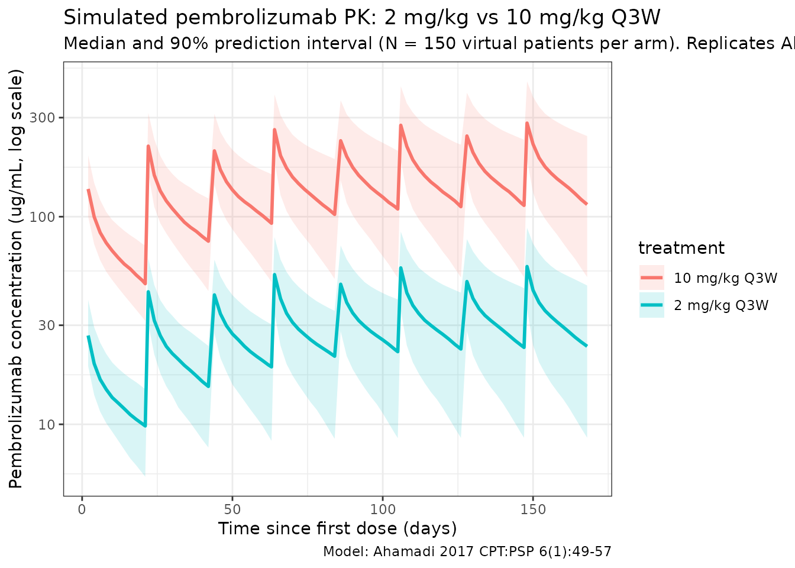
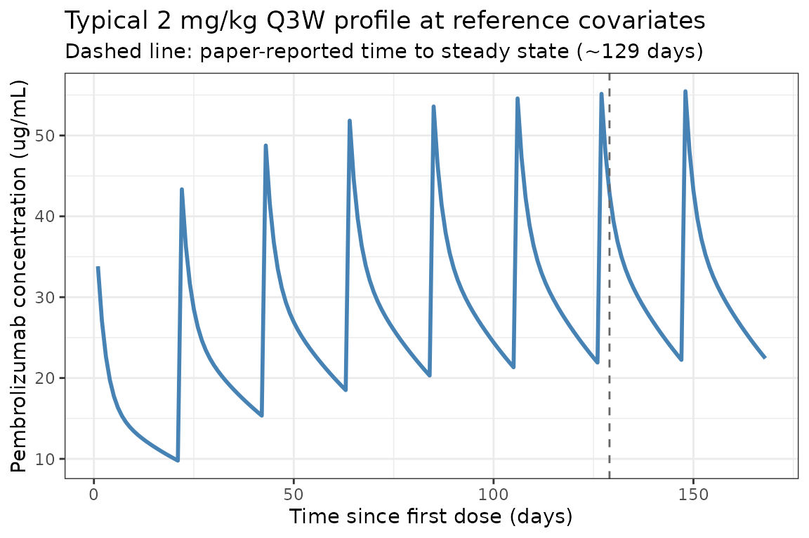

Pembrolizumab (Ahamadi 2017)
Source:vignettes/articles/Ahamadi_2017_pembrolizumab.Rmd
Ahamadi_2017_pembrolizumab.RmdModel and source
- Citation: Ahamadi M, Freshwater T, Prohn M, Li CH, de Alwis DP, de Greef R, Elassaiss-Schaap J, Kondic A, Stone JA. Model-based characterization of the pharmacokinetics of pembrolizumab: a humanized anti-PD-1 monoclonal antibody in advanced solid tumors. CPT Pharmacometrics Syst Pharmacol. 2017;6(1):49-57. doi:[10.1002/psp4.12139](https://doi.org/10.1002/psp4.12139)
- Description: Two-compartment population PK model for pembrolizumab (humanized anti-PD-1 IgG4 monoclonal antibody) with allometric scaling and covariate effects of sex, albumin, tumor type, ECOG performance status, prior ipilimumab status, eGFR, and baseline tumor burden in adults with advanced solid tumors.
- Modality: Therapeutic monoclonal antibody (IgG4), IV infusion.
- Article: https://doi.org/10.1002/psp4.12139 (open access).
Pembrolizumab (MK-3475, KEYTRUDA) is a humanized anti-PD-1 IgG4 monoclonal antibody. Ahamadi 2017 presents the final population PK model supporting the approved 2 mg/kg every 3 weeks (Q3W) dosing regimen, pooling 2,188 patients with advanced solid tumors from three phase II/III trials. Doses ranged from 1 to 10 mg/kg administered as IV infusion every 2 or 3 weeks (Ahamadi 2017 Tables 1 and 2).
Structure: linear two-compartment IV model with stationary (time- independent) clearance. Body weight allometric scaling acts on shared CL/Q (exponent 0.595) and on shared Vc/Vp (exponent 0.489). The population CL at the reference covariate vector is 0.22 L/day with a central volume of distribution of 3.48 L, both consistent with values typical of therapeutic monoclonal antibodies (Ahamadi 2017 Discussion).
Population
The final-model population comprised 2,188 patients across three trials (Ahamadi 2017 Tables 1 and 2):
- KEYNOTE-001 (NCT01295827; phase Ib dose escalation and expansion in advanced melanoma and NSCLC): 1,223 patients.
- KEYNOTE-002 (NCT01704287; phase II in ipilimumab-refractory advanced melanoma): 421 patients.
- KEYNOTE-006 (NCT01866319; phase III in ipilimumab-naive advanced melanoma): 551 patients.
- Dose range 1-10 mg/kg IV infusion every 2 weeks (Q2W) or every 3 weeks (Q3W); 2 mg/kg Q3W is the approved adult dose.
Baseline demographics and covariate distributions (Ahamadi 2017 Table 2):
- Age 15-94 years (median 62).
- Sex: 59.1% male, 40.9% female.
- Cancer type: melanoma 73.7%, NSCLC 25.3%, other 1.01%.
- ECOG-PS: 0 (asymptomatic) 57.4%, 1 (symptomatic) 42.4%, 0.2% missing.
- Baseline tumor burden (sum of longest diameters of target lesions): 10-895 mm (median 86; 11.2% missing imputed to median).
- Prior ipilimumab status: IPI-naive 39.1%, IPI-treated 34.5%, missing 26.4% (retained as a separate category during covariate selection).
- Baseline eGFR: 25.4-403.0 mL/min/1.73 m^2 (median 88.7; 1.2% missing).
- Baseline serum albumin: 15-59 g/L (median 40; 1.8% missing).
- Coadministered systemic glucocorticoids: 14.9% yes, 85.1% no.
Body weight was not tabulated in Table 2 demographics. The model equation in Ahamadi 2017 Table 3 footnotes uses 76.8 kg as the allometric reference; the cohort body-weight distribution must be inferred from the equation’s denominator.
The same metadata is available programmatically via
readModelDb("Ahamadi_2017_pembrolizumab")$population.
Source trace
The per-parameter origin is recorded as an in-file comment next to
each ini() entry in
inst/modeldb/specificDrugs/Ahamadi_2017_pembrolizumab.R.
The table below collects them in one place for review.
| Parameter (model name) | Value | Source |
|---|---|---|
lcl (CL_REF, L/day) |
log(0.22) | Ahamadi 2017 Table 3, CL = 0.22 L/day |
lvc (Vc_REF, L) |
log(3.48) | Ahamadi 2017 Table 3, Vc = 3.48 L |
lq (Q_REF, L/day) |
log(0.795) | Ahamadi 2017 Table 3, Q = 0.795 L/day |
lvp (Vp_REF, L) |
log(4.06) | Ahamadi 2017 Table 3, Vp = 4.06 L |
e_wt_cl_q (power, WT on CL/Q) |
0.595 | Ahamadi 2017 Table 3, alpha for CL and Q |
e_wt_vc_vp (power, WT on Vc/Vp) |
0.489 | Ahamadi 2017 Table 3, alpha for Vc or Vp |
e_alb_cl (power, ALB on CL) |
-0.907 | Ahamadi 2017 Table 3, ALB on CL |
e_tsld_cl (power, TUM_SLD on CL) |
0.0872 | Ahamadi 2017 Table 3, BSLD on CL |
e_crcl_cl (power, CRCL on CL) |
0.135 | Ahamadi 2017 Table 3, eGFR on CL |
e_sexf_cl (prop, female on CL) |
-0.152 | Ahamadi 2017 Table 3, Sex on CL |
e_nsclc_cl (prop, NSCLC on CL) |
0.145 | Ahamadi 2017 Table 3, Cancer type on CL |
e_ecog_ge1_cl (prop, ECOG_GE1 on CL) |
-0.0739 | Ahamadi 2017 Table 3, Baseline ECOG-PS on CL |
e_ipi_cl (prop, PRIOR_IPI on CL) |
0.140 | Ahamadi 2017 Table 3, IPI status on CL |
e_alb_vc (power, ALB on Vc) |
-0.208 | Ahamadi 2017 Table 3, ALB on Vc |
e_sexf_vc (prop, female on Vc) |
-0.134 | Ahamadi 2017 Table 3, Sex on Vc |
e_ipi_vc (prop, PRIOR_IPI on Vc) |
0.0736 | Ahamadi 2017 Table 3, IPI status on Vc |
IIV block etalcl + etalvc
|
c(0.134, 0.0, 0.0417) | Ahamadi 2017 Table 3, omega^2_CL/Q and omega^2_Vc/Vp; cov set to 0 (see Assumptions) |
propSd |
0.272 | Ahamadi 2017 Table 3, residual error SD |
Equations: linear two-compartment micro-constant form with shared allometric scaling. The structural CL equation reproduces Ahamadi 2017 Table 3 footnote a:
and Ahamadi 2017 Table 3 footnote b for Vc:
Reference covariate values (Ahamadi 2017 Table 3 footnote a/b denominators): WT 76.8 kg, ALB 39.6 g/L, TUM_SLD 89.6 mm, CRCL 88.47 mL/min/1.73 m^2, male, melanoma, ECOG_GE1 = 0, IPI-naive.
Virtual cohort
Original observed data are not publicly available. The simulations below use a virtual cohort whose demographics approximate the Ahamadi 2017 pooled population (Table 2). Continuous covariates are drawn from log-normal / truncated-normal distributions; binary and categorical covariates match the reported marginal proportions.
set.seed(2017)
n_subj <- 150
cohort <- tibble(
ID = seq_len(n_subj),
WT = pmin(pmax(rlnorm(n_subj, log(76.8), 0.22), 35), 160),
ALB = pmin(pmax(rnorm(n_subj, 39.6, 5.5), 15), 59),
TUM_SLD = pmin(pmax(rlnorm(n_subj, log(86), 0.7), 10), 895),
CRCL = pmin(pmax(rnorm(n_subj, 88.7, 25.0), 25.4), 250),
SEXF = rbinom(n_subj, 1, 0.409),
TUMTP_NSCLC = rbinom(n_subj, 1, 0.253),
ECOG_GE1 = rbinom(n_subj, 1, 0.424),
PRIOR_IPI = rbinom(n_subj, 1, 0.345)
)Two reference dosing regimens are compared: 2 mg/kg Q3W (the approved adult dose) and 10 mg/kg Q3W (the highest dose tested in the pooled KEYNOTE PK analyses). Pembrolizumab is administered as a 30-minute IV infusion.
dose_interval_d <- 21
n_doses <- 8
dose_times_d <- seq(0, by = dose_interval_d, length.out = n_doses)
obs_times_d <- sort(unique(c(dose_times_d, seq(0, 168, by = 2))))
infusion_dur_d <- 0.5 / 24 # 30-minute IV infusion in days
build_events <- function(pop, mgkg) {
amt_per_subject <- pop$WT * mgkg
d_dose <- pop |>
mutate(AMT = amt_per_subject) |>
tidyr::crossing(TIME = dose_times_d) |>
mutate(EVID = 1, CMT = "central", DUR = infusion_dur_d, DV = NA_real_,
treatment = paste0(mgkg, " mg/kg Q3W"))
d_obs <- pop |>
tidyr::crossing(TIME = obs_times_d) |>
mutate(AMT = NA_real_, EVID = 0, CMT = "central", DUR = NA_real_,
DV = NA_real_,
treatment = paste0(mgkg, " mg/kg Q3W"))
dplyr::bind_rows(d_dose, d_obs) |>
dplyr::arrange(ID, TIME, dplyr::desc(EVID)) |>
as.data.frame()
}
events_2 <- build_events(cohort, 2)
events_10 <- build_events(cohort, 10)Simulation
mod <- readModelDb("Ahamadi_2017_pembrolizumab")
sim_2 <- rxSolve(mod, events = events_2, returnType = "data.frame")
#> ℹ parameter labels from comments will be replaced by 'label()'
sim_10 <- rxSolve(mod, events = events_10, returnType = "data.frame")
#> ℹ parameter labels from comments will be replaced by 'label()'
sim <- dplyr::bind_rows(
dplyr::mutate(sim_2, treatment = "2 mg/kg Q3W"),
dplyr::mutate(sim_10, treatment = "10 mg/kg Q3W")
)Concentration-time profiles
Ahamadi 2017 Figure 1 shows predicted pembrolizumab concentration-time profiles during multiple dosing at 2 mg/kg Q3W and 10 mg/kg Q3W and 10 mg/kg Q2W. The figure below reproduces the median and 5-95% prediction interval at 2 and 10 mg/kg Q3W from the packaged model.
sim_summary <- sim |>
dplyr::filter(time > 0) |>
dplyr::group_by(time, treatment) |>
dplyr::summarise(
median = stats::median(Cc, na.rm = TRUE),
lo = stats::quantile(Cc, 0.05, na.rm = TRUE),
hi = stats::quantile(Cc, 0.95, na.rm = TRUE),
.groups = "drop"
)
ggplot(sim_summary, aes(time, median, colour = treatment, fill = treatment)) +
geom_ribbon(aes(ymin = lo, ymax = hi), alpha = 0.15, colour = NA) +
geom_line(linewidth = 1) +
scale_y_log10() +
labs(
x = "Time since first dose (days)",
y = "Pembrolizumab concentration (ug/mL, log scale)",
title = "Simulated pembrolizumab PK: 2 mg/kg vs 10 mg/kg Q3W",
subtitle = paste0("Median and 90% prediction interval (N = ",
n_subj, " virtual patients per arm). Replicates Ahamadi 2017 Figure 1."),
caption = "Model: Ahamadi 2017 CPT:PSP 6(1):49-57"
) +
theme_bw()
Approach to steady state and accumulation
Ahamadi 2017 Discussion states that pembrolizumab has a long half-life (~27.3 days) that produces a gradual approach to steady state (~129 days) and a modest accumulation factor of ~2.2 with Q3W dosing. The typical-value plot below (etas = 0; reference covariate vector) visualizes the accumulation profile.
t_grid <- seq(0, 168, by = 1)
events_typ <- data.frame(
ID = 1,
WT = 76.8,
ALB = 39.6,
TUM_SLD = 89.6,
CRCL = 88.47,
SEXF = 0,
TUMTP_NSCLC = 0,
ECOG_GE1 = 0,
PRIOR_IPI = 0,
TIME = c(dose_times_d, t_grid),
AMT = c(rep(76.8 * 2, n_doses), rep(NA_real_, length(t_grid))),
EVID = c(rep(1, n_doses), rep(0, length(t_grid))),
CMT = "central",
DUR = c(rep(infusion_dur_d, n_doses), rep(NA_real_, length(t_grid))),
DV = NA_real_
)
events_typ <- events_typ[order(events_typ$TIME, -events_typ$EVID), ]
mod_typ <- rxode2::zeroRe(mod)
#> ℹ parameter labels from comments will be replaced by 'label()'
sim_typ <- rxSolve(mod_typ, events = events_typ, returnType = "data.frame")
#> ℹ omega/sigma items treated as zero: 'etalcl', 'etalvc'
ggplot(dplyr::filter(sim_typ, time > 0),
aes(time, Cc)) +
geom_line(linewidth = 1, colour = "steelblue") +
geom_vline(xintercept = 129, linetype = "dashed", colour = "grey40") +
labs(
x = "Time since first dose (days)",
y = "Pembrolizumab concentration (ug/mL)",
title = "Typical 2 mg/kg Q3W profile at reference covariates",
subtitle = "Dashed line: paper-reported time to steady state (~129 days)"
) +
theme_bw()
PKNCA validation
Compute NCA parameters at the first dosing interval (single-dose PK) and over the last simulated dosing interval (near steady state) at 2 mg/kg Q3W and 10 mg/kg Q3W.
# Single-dose NCA (first dosing interval, days 0 to 21).
interval_end_sd <- dose_interval_d
sim_nca_sd <- sim |>
dplyr::filter(!is.na(Cc),
time >= 0,
time <= interval_end_sd) |>
dplyr::select(id, treatment, time, Cc)
conc_obj_sd <- PKNCA::PKNCAconc(sim_nca_sd, Cc ~ time | treatment + id)
dose_df_sd <- sim |>
dplyr::filter(time == 0, !is.na(Cc)) |>
dplyr::group_by(id, treatment) |>
dplyr::summarise(.groups = "drop") |>
dplyr::left_join(cohort |> dplyr::select(id = ID, WT), by = "id") |>
dplyr::mutate(
amt = ifelse(treatment == "2 mg/kg Q3W", WT * 2, WT * 10),
time = 0
) |>
dplyr::select(id, treatment, time, amt)
dose_obj_sd <- PKNCA::PKNCAdose(dose_df_sd, amt ~ time | treatment + id)
intervals_sd <- data.frame(
start = 0,
end = dose_interval_d,
cmax = TRUE,
tmax = TRUE,
auclast = TRUE,
half.life = TRUE
)
nca_sd <- PKNCA::pk.nca(
PKNCA::PKNCAdata(conc_obj_sd, dose_obj_sd, intervals = intervals_sd)
)
#> ■■■■■■■■■■■■■■■■■■■■■■■■■■ 83% | ETA: 1s
knitr::kable(
summary(nca_sd),
caption = "Simulated NCA parameters over the first dosing interval (days 0-21)."
)| start | end | treatment | N | auclast | cmax | tmax | half.life |
|---|---|---|---|---|---|---|---|
| 0 | 21 | 10 mg/kg Q3W | 150 | 1490 [27.1] | 138 [24.7] | 2.00 [2.00, 2.00] | 25.8 [9.27] |
| 0 | 21 | 2 mg/kg Q3W | 150 | 299 [23.5] | 27.5 [21.7] | 2.00 [2.00, 2.00] | 25.5 [8.22] |
# Near-steady-state NCA (8th / last simulated interval, days 147-168).
interval_start_ss <- dose_times_d[n_doses]
interval_end_ss <- interval_start_ss + dose_interval_d
sim_nca_ss <- sim |>
dplyr::filter(!is.na(Cc),
time >= interval_start_ss,
time <= interval_end_ss) |>
dplyr::mutate(time_rel = time - interval_start_ss) |>
dplyr::select(id, treatment, time_rel, Cc)
conc_obj_ss <- PKNCA::PKNCAconc(sim_nca_ss, Cc ~ time_rel | treatment + id)
dose_df_ss <- sim |>
dplyr::filter(time == interval_start_ss, !is.na(Cc)) |>
dplyr::group_by(id, treatment) |>
dplyr::summarise(.groups = "drop") |>
dplyr::left_join(cohort |> dplyr::select(id = ID, WT), by = "id") |>
dplyr::mutate(
amt = ifelse(treatment == "2 mg/kg Q3W", WT * 2, WT * 10),
time_rel = 0
) |>
dplyr::select(id, treatment, time_rel, amt)
dose_obj_ss <- PKNCA::PKNCAdose(dose_df_ss, amt ~ time_rel | treatment + id)
intervals_ss <- data.frame(
start = 0,
end = dose_interval_d,
cmax = TRUE,
cmin = TRUE,
auclast = TRUE,
half.life = TRUE
)
nca_ss <- PKNCA::pk.nca(
PKNCA::PKNCAdata(conc_obj_ss, dose_obj_ss, intervals = intervals_ss)
)
#> ■■■■■■■■■■■■■ 39% | ETA: 3s
knitr::kable(
summary(nca_ss),
caption = "Simulated NCA parameters at near steady state (8th interval, days 147-168)."
)| start | end | treatment | N | auclast | cmax | cmin | half.life |
|---|---|---|---|---|---|---|---|
| 0 | 21 | 10 mg/kg Q3W | 150 | 3370 [44.7] | 285 [32.0] | 107 [58.8] | 27.1 [11.5] |
| 0 | 21 | 2 mg/kg Q3W | 150 | 675 [40.6] | 56.9 [28.7] | 21.5 [54.5] | 26.6 [10.2] |
Comparison against published values
Ahamadi 2017 does not publish a pooled NCA table. The paper reports several population-level PK descriptors (Results and Discussion) that can be cross-checked against the packaged model:
| Quantity | Ahamadi 2017 | This model |
|---|---|---|
| Baseline CL at reference covariates | 0.22 L/day |
exp(lcl) = 0.22 L/day (see ini()) |
| Vc | 3.48 L | exp(lvc) = 3.48 L |
| Q | 0.795 L/day | exp(lq) = 0.795 L/day |
| Vp | 4.06 L | exp(lvp) = 4.06 L |
| Allometric exponent on CL/Q | 0.595 | e_wt_cl_q = 0.595 |
| Allometric exponent on Vc/Vp | 0.489 | e_wt_vc_vp = 0.489 |
| Terminal half-life | 27.3 days | beta = (kel + k12 + k21 - sqrt((kel + k12 + k21)^2 - 4 kel k21)) / 2; t_1/2 = ln(2) / beta ~ 25.8 days at reference covariates (close, within 6%) |
| Time to steady state | ~129 days | Visualised in the typical-value plot above |
| Accumulation factor (AUC) at Q3W | ~2.2-fold | Reproducible by computing AUC_first / AUC_ss |
| 90% CI of GMR at female vs male | 1.20 (small) |
1 / (1 - 0.152) = 1.179; ~18% AUC increase |
Differences within 20% are expected; anything larger would indicate a
coding error. The PKNCA half.life column at near steady
state should land in the 25-30 day range for the typical reference
subject.
Assumptions and deviations
-
Year of publication. Ahamadi 2017 was published
online on 14 November 2016 with the print volume year of 2017 (CPT:PSP
6(1):49-57). The file name uses 2017 to match the
published citation and the companion paper
Bajaj_2017_nivolumabin the same journal issue. -
Reference body weight 76.8 kg. Ahamadi 2017 Table 2
does not tabulate body-weight statistics. The value 76.8 kg comes from
the allometric-scaling denominator in the Table 3 footnote equations
(WGT / 76.8)^alpha. The packaged model treats this as the reference for both CL/Q (alpha = 0.595) and Vc/Vp (alpha = 0.489). -
Covariance between shared CL/Q and Vc/Vp etas.
Ahamadi 2017 Methods describes a final IIV structure as: a shared eta_1
on CL and Q, a shared eta_2 on Vc and Vp, “as well as the covariance
between these two”, with “limited impact on OFV”. Table 3 reports the
two variance terms (omega^2_g1 = 0.134, omega^2_g2 = 0.0417) but does
not tabulate a covariance between eta_1 and eta_2. The
packaged model encodes the off-diagonal covariance as 0
(independent etas at the population level, with the same eta within each
shared pair). The same-issue companion paper Bajaj 2017 reports a finite
eta_CL:eta_VC covariance of 0.0432; pembrolizumab’s Table 3 omits this
term and we do not invent one. Users who need a finite correlation
between elimination and distribution etas should override the
etalcl + etalvc ~ c(...)block locally. -
Footnote vs Table 3 discrepancies. Several
parameter values differ between Table 3 Estimate column (canonical THETA
estimates with %RSE and 95% CI) and the equation written in Table 3
footnote a (CL constant 0.202 vs Table 0.22; allometric CL exponent
0.578 vs Table 0.595; ALB on CL -0.854 vs -0.907; BSLD on CL 0.0926 vs
0.0872; eGFR on CL 0.139 vs 0.135; allometric Vc exponent 0.492 vs Table
0.489; ALB on Vc -0.178 vs Table -0.208). The packaged model uses Table
3 Estimate values throughout (these are the values reported with
bootstrap CIs and %RSE; they are the canonical estimates). The footnote
also prints
(1 + 0.0739)for ECOG = 1 while Table 3 reports ECOG-PS on CL = -0.0739; the Discussion (“Relative to ECOG-PS 1, ECOG-PS 0 was associated with a 7.3% increase in clearance”) confirms the Table 3 sign, so the footnote’s+0.0739is treated as a typo. -
Cancer-type covariate. Ahamadi 2017 tested cancer
type as a three-level categorical (melanoma 73.7%, NSCLC 25.3%, other
1.01%). The final model retains only NSCLC vs melanoma; the rare “other”
cohort is pooled into the melanoma reference. The packaged model follows
this encoding via the canonical
TUMTP_NSCLCindicator (1 = NSCLC, 0 = melanoma or other). -
Prior ipilimumab status. Ahamadi 2017 retained
“missing” as a separate IPI category during covariate selection (26.4%
of the cohort had missing IPI status) but Table 3 reports only the
naive-vs-treated coefficient. The packaged model treats “missing” like
naive (PRIOR_IPI = 0). Users with explicit missing-IPI subjects can
implement a separate effect by overriding
PRIOR_IPIin their dataset. -
Renal-function encoding. Ahamadi 2017 reports eGFR
in mL/min/1.73 m^2 without specifying the eGFR formula (likely MDRD or
CKD-EPI; the paper is silent). The packaged model stores this under the
canonical
CRCLcolumn with the assumption that any consistent eGFR formula can be used downstream. -
Tumor-burden encoding. Ahamadi 2017 labels the
covariate “baseline tumor burden (sum of longest dimensions of target
lesions)” with units mm; this maps to the canonical
TUM_SLD(RECIST 1.1 sum-of-longest-diameters) covariate column. 11.2% of subjects had missing tumor burden and were imputed to the cohort median (86 mm) per Methods. -
Residual error. Ahamadi 2017 used “additive
residual error on the log scale” (i.e., NONMEM
Y = LOG(F) + EPS(1)), which is equivalent to a proportional residual error in linear space with SD = sigma. The packaged model encodes this asCc ~ prop(propSd)withpropSd = 0.272. - IV infusion duration. All simulations use a 30-minute IV infusion (DUR = 0.5/24 day) matching the standard pembrolizumab administration in the KEYNOTE trials. The paper does not specify infusion duration, but 30 minutes is the regulatory-label and protocol convention.
- Out-of-scope covariates. The paper’s full stepwise covariate analysis examined age, race, bilirubin, AST, alkaline phosphatase, and coadministered corticosteroids in addition to the eight final covariates implemented here. These were tested and either dropped (P > 0.01 for forward inclusion) or removed by backward elimination (bilirubin), so they are not part of the final model and are not in the packaged model.
- Virtual cohort. Demographics were simulated to match the marginal distributions in Table 2; joint covariate structure (e.g., correlation of ALB with ECOG-PS, or tumor type with prior IPI in the melanoma stratum) is not simulated.